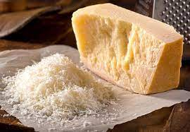
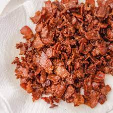
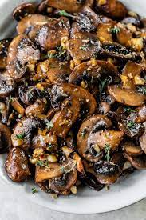
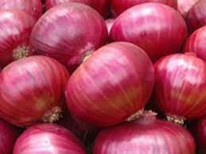
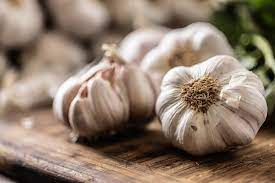

This easy green bean casserole starts with two drained cans of green beans.

A can of condensed cream of mushroom soup creates a creamy texture
and adds savory flavor.

This recipe calls for shredded Cheddar cheese. Use sharp, mild, or a
blend of both.
The green bean casserole gets its crunch from a French-fried onion topping.
:such as;
    